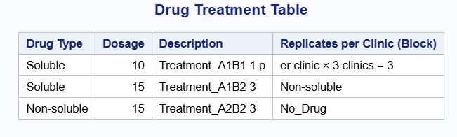
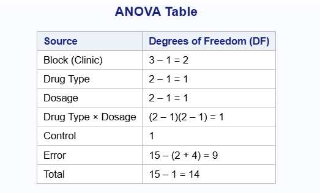
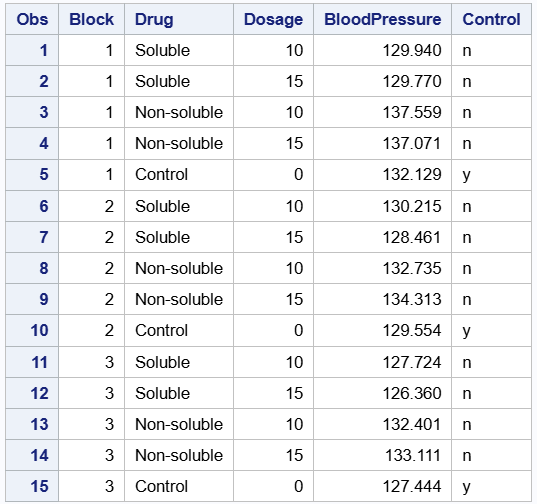
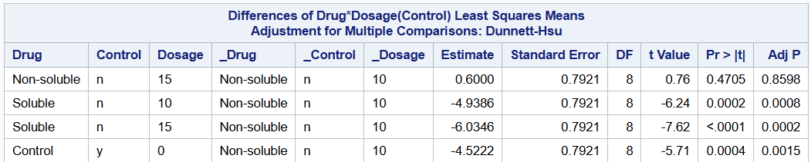

Source Degrees_of_Freedom
Block r - 1
Factor A a - 1
Factor B b - 1
A × B (a - 1)(b - 1)
Control 1
Error n - [r + ab + 1]
Total n - 1Chapter 2: Factorial with Control and Block
Exploring a 2 × 2 Factorial With Control with Blocks
We extend our discussion of a 2 × 2 factorial with control to a 2 × 2 factorial design with a control that involves blocking. If blocks are used, treatments are randomized within each block. This results in a randomized complete block design (RCBD), where each treatment (including control if embedded) appears once per block.
Recall, in a 2 × 2 factorial with control presented in the previous chapter, the four factorial combinations were: A1B1, A1B2, A2B1, A2B2. The control treatment (C) was treated as a fifth, independent treatment, outside the factorial combinations. It was not associated with any level of factor A or B. The control is usually included as a reference, not involved in interaction effects. For a 2 × 2 factorial with control and blocks, this allows the analysis to:
Control for block-to-block variation
Compare each factorial treatment to the control within and across blocks
Estimate main effects and interaction effects within the factorial structure
Maintain orthogonality between blocks and treatments
The analysis of variance for a 2 × 2 factorial design with control and blocks is shown using the R and SAS codes below. The data.frame() function in R creates the data frame with source of variation and degrees of freedom. We also show the corresponding output in SAS below. The anova table presented in this chapter is similar to the one in the previous chapter. The only addition this time is the extra source of variation, which is the block and its corresponding degrees of freedom.
Interpretation of R and SAS Codes
The data.frame() function in R again creates a data frame with variables Source and Degrees of Freedom. We see that the sources of variation is the same as the one we saw in the previous chapter. Only additional source of variation is the block term. We use the function print() in R to print out our data frame. For the SAS code, we obtain the same table with the codes provided. All codes are similar to the ones provided in the previous chapter.
data anova_table; /* this creates the data frame */
length Source $20 Degrees_of_Freedom $30;
input Source $20 Degrees_of_Freedom $30; /* creates the columns Source and Degrees of Freedom */
datalines;
Block (r - 1)
A (a - 1)
B (b - 1)
A_x_B (a - 1)(b - 1)
Control 1
Error (n - [r + ab + 1])
Total (n - 1)
;
run;
proc print data=anova_table noobs;
title "Symbolic ANOVA Table";
run; {fig-align = “center”}
{fig-align = “center”}
Example
Researchers are interested in evaluating the effect of two drugs on blood pressure. They want to know whether the drug type (soluble vs. non-soluble) and dosage (10 units vs. 15 units) influence outcomes. A control group (no drug) is also included to serve as a baseline for comparison.
Furthermore, to reduce variability arising from different clinics and other extraneous factors, the experiment is conducted as a randomized complete block design. The R code below presents a summary table which describes how the experiment was conducted, that is, the type of treatments, and replicates per clinics. We also show same results in the SAS output below.
Drug Type Dosage Description Replicates per Clinic (Block)
Soluble 10 Treatment A1B1 1 per clinic × 3 clinics = 3
Soluble 15 Treatment A1B2 3
Non-soluble 10 Treatment A2B1 3
Non-soluble 15 Treatment A2B2 3
No Drug 0 Control 3 (1 in each clinic)data drug_table;
length
Drug_Type $15
Dosage 8
Description $20
Replicates_per_Clinic_Block $40;
input
Drug_Type $
Dosage
Description $20.
Replicates_per_Clinic_Block & $40.;
datalines;
Soluble 10 Treatment_A1B1 1 per clinic × 3 clinics = 3
Soluble 15 Treatment_A1B2 3
Non-soluble 10 Treatment_A2B1 3
Non-soluble 15 Treatment_A2B2 3
No_Drug 0 Control 3 (1 in each clinic)
;
run;
proc print data=drug_table noobs label;
label
Drug_Type = "Drug Type"
Replicates_per_Clinic_Block = "Replicates per Clinic (Block)";
title "Drug Treatment Table";
run;
{fig-align = “center”}In this RCBD, each clinic receives all treatments, including the control, randomly assigned within the clinic. Clinic in this experiment is considered as the block. We present the anova table using both R and SAS in the code below. We see from the output that the degree of freedom for clinic is 2. The degrees of freedom for drug type and dosage are 1 respectively, as well as their interaction. Lastly, the degrees of freedom for the control and error terms are 1 and 9 respectively. The same result is obtained in the SAS output.
Source Degrees of Freedom (DF)
Block (Clinic) 3 – 1 = 2
Drug Type 2 – 1 = 1
Dosage 2 – 1 = 1
Drug Type × Dosage (2 – 1)(2 – 1) = 1
Control 1
Error 15 – (2 + 4) = 9
Total 15 – 1 = 14data anova_df;
length
Source $30
DF $25;
input
Source & $30.
DF & $25.;
datalines;
Block (Clinic) 3 – 1 = 2
Drug Type 2 – 1 = 1
Dosage 2 – 1 = 1
Drug Type × Dosage (2 – 1)(2 – 1) = 1
Control 1
Error 15 – (2 + 4) = 9
Total 15 – 1 = 14
;
run;
proc print data=anova_df noobs label;
label
Source = "Source"
DF = "Degrees of Freedom (DF)";
title "ANOVA Table";
run;
{fig-align = “center”}Model
Next, we present the statistical model for the design above. The model below is similar to the model in chapter 1. In this model, we include the block term. Note that we do not assume block by interaction in this model.
\(y_{ijk} = \mu + \beta_{i} + \tau_{jl} + \delta_{kl} + \tau\delta_{jkl} + control_{l} + \epsilon_{ijkl}\)
where,
\(y_{ijk}\) is the blood pressure of the kth individual using the ith drug type at the jth dose
\(\mu\) is the intercept
\(\beta_{i}\) is the effect from the ith block, block is considered fixed
\(\tau_{jl}\) is the effect from the jth drug type nested in the Control
\(\delta_{kl}\) is the effect from the kth dose level nested in the control
\(\tau\delta_{jkl}\) is the interaction between drug type and dosage level in the Control
\(control_{l}\) is the control
\(\epsilon_{ijkl}\) is the residual, \(\epsilon_{ijkl}\) ~ \(N(0,\sigma^{2})\)
For a 2 × 2 factorial design with a control and blocks, we again create a control variable that nests the treatment combination. Where “n” indicates there is no control and “y” indicates otherwise. The R code below shows the data frame including the control variable. We print out the output below.
In the R code below, we have 3 blocks with 5 replicates. This is because, for an RCBD, we have each treatment combination and a control. This means we have 5 treatments in each block overall. The SAS code and output also produces similar results.
Block Drug Dosage BloodPressure Control
1 1 Soluble 10 129.9395 n
2 1 Soluble 15 129.7698 n
3 1 Non-soluble 10 137.5587 n
4 1 Non-soluble 15 137.0705 n
5 1 Control 0 132.1293 y
6 2 Soluble 10 130.2151 n
7 2 Soluble 15 128.4609 n
8 2 Non-soluble 10 132.7349 n
9 2 Non-soluble 15 134.3131 n
10 2 Control 0 129.5543 y
11 3 Soluble 10 127.7241 n
12 3 Soluble 15 126.3598 n
13 3 Non-soluble 10 132.4008 n
14 3 Non-soluble 15 133.1107 n
15 3 Control 0 127.4442 ydata pressure;
input Block Drug $15. Dosage BloodPressure Control $;
datalines;
1 Soluble 10 129.9395 n
1 Soluble 15 129.7698 n
1 Non-soluble 10 137.5587 n
1 Non-soluble 15 137.0705 n
1 Control 0 132.1293 y
2 Soluble 10 130.2151 n
2 Soluble 15 128.4609 n
2 Non-soluble 10 132.7349 n
2 Non-soluble 15 134.3131 n
2 Control 0 129.5543 y
3 Soluble 10 127.7241 n
3 Soluble 15 126.3598 n
3 Non-soluble 10 132.4008 n
3 Non-soluble 15 133.1107 n
3 Control 0 127.4442 y
;
run;
proc print data=pressure;
run;
{fig-align = “center”}The explanatory analysis for this data can be seen in the previous chapter where we presented an example with the same data but we did not consider blocking.
The table below shows the variance components for block and residual. Looking at the table, the variance for block is 3.615 and the variance for residual is 0.941. The block variance measures how much of the total variability in the response variable is being explained by the block.In this example, we see that a large proportion of the total variation is due to the block.
Secondly, we show the estimates of fixed effects in the output below. Nevertheless, with this type of design, such estimates can be misleading. Therefore, we do not use information from this table for inference or conclusions.
The results we get in this ANOVA table are very similar to the one we obtained previous chapter without the block. In the anova table, the variance for the block and residual terms are 3.615 and 0.941 respectively. This means that, there is a lot of variation among blocks but not so much among treatments with blocks.
Next, we show the estimated marginal means table also in the output below. The estimated mean for non-soluble and soluble drugs at 10 percent dosage level were 132 and 127 respectively. Also, for non-soluble and soluble drugs at 15 percent dosage, the estimated means were 131 and 126 respectively. Lastly, the estimate for control is 137, which is higher than all other treatment combinations.
Linear mixed model fit by REML ['lmerMod']
Formula:
BloodPressure ~ Control + Drug:Control + Dosage:Control + Drug:Dosage:Control +
(1 | Block)
Data: df
REML criterion at convergence: 39.3
Scaled residuals:
Min 1Q Median 3Q Max
-1.34999 -0.36006 0.03301 0.38654 1.42985
Random effects:
Groups Name Variance Std.Dev.
Block (Intercept) 3.615 1.9014
Residual 0.941 0.9701
Number of obs: 15, groups: Block, 3
Fixed effects:
Estimate Std. Error t value
(Intercept) 128.1968 1.2324 104.022
Controly 1.5124 0.7921 1.910
Controln:DrugNon-soluble 6.6346 0.7921 8.376
Controln:Dosage10 1.0961 0.7921 1.384
Controln:DrugNon-soluble:Dosage10 -1.6960 1.1201 -1.514
Correlation of Fixed Effects:
(Intr) Cntrly Cn:DN- Cn:D10
Controly -0.321
Cntrln:DrN- -0.321 0.500
Cntrln:Ds10 -0.321 0.500 0.500
Cnt:DN-:D10 0.227 -0.354 -0.707 -0.707
fit warnings:
fixed-effect model matrix is rank deficient so dropping 13 columns / coefficientsAnalysis of Variance Table
npar Sum Sq Mean Sq F value
Control 1 8.929 8.929 9.4891
Control:Drug 1 100.454 100.454 106.7486
Control:Dosage 1 0.185 0.185 0.1962
Control:Drug:Dosage 1 2.157 2.157 2.2926proc glimmix data = pressure;
title "BloodPressure";
class Block Drug Dosage Control ;
model BloodPressure = Control Drug(Control) Dosage(Control) Drug*Dosage(Control)/solution ddfm=kr;
lsmeans Control Drug(Control) Drug*Dosage(Control)/diff adjust=dunnett;
random Block;
run; {fig-align = “center”}
{fig-align = “center”}
We also show the differences in the Drug by Dosage treatment combination in the table below.
Control emmean SE df lower.CL upper.CL
n 132 1.13 2.05 127 136
y 130 1.23 2.84 126 134
Results are averaged over the levels of: Dosage, Drug
Degrees-of-freedom method: kenward-roger
Confidence level used: 0.95 Control = n:
Drug emmean SE df lower.CL upper.CL
Non-soluble 135 1.17 2.30 130 139
Soluble 129 1.17 2.30 124 133
Control = y:
Drug emmean SE df lower.CL upper.CL
Control 130 1.23 2.84 126 134
Results are averaged over the levels of: Dosage
Degrees-of-freedom method: kenward-roger
Confidence level used: 0.95 Control = n:
Drug Dosage emmean SE df lower.CL upper.CL
Non-soluble 10 134 1.23 2.84 130 138
Soluble 10 129 1.23 2.84 125 133
Non-soluble 15 135 1.23 2.84 131 139
Soluble 15 128 1.23 2.84 124 132
Control = y:
Drug Dosage emmean SE df lower.CL upper.CL
Control 0 130 1.23 2.84 126 134
Degrees-of-freedom method: kenward-roger
Confidence level used: 0.95 contrast estimate SE df t.ratio p.value
n - y 1.93 0.626 8 3.080 0.0151
Results are averaged over the levels of: Dosage, Drug
Degrees-of-freedom method: kenward-roger Control = n:
contrast estimate SE df t.ratio p.value
(Non-soluble) - Soluble 5.79 0.56 8 10.332 <.0001
Control = y:
contrast estimate SE df t.ratio p.value
(nothing) nonEst NA NA NA NA
Results are averaged over some or all of the levels of: Dosage
Degrees-of-freedom method: kenward-roger Control = n:
contrast estimate SE df t.ratio
(Non-soluble Dosage10) - Soluble Dosage10 4.94 0.792 8 6.235
(Non-soluble Dosage10) - (Non-soluble Dosage15) -0.60 0.792 8 -0.757
(Non-soluble Dosage10) - Soluble Dosage15 6.03 0.792 8 7.619
Soluble Dosage10 - (Non-soluble Dosage15) -5.54 0.792 8 -6.993
Soluble Dosage10 - Soluble Dosage15 1.10 0.792 8 1.384
(Non-soluble Dosage15) - Soluble Dosage15 6.63 0.792 8 8.376
p.value
0.0012
0.8889
0.0003
0.0005
0.5756
0.0002
Control = y:
contrast estimate SE df t.ratio
(nothing) nonEst NA NA NA
p.value
NA
Degrees-of-freedom method: kenward-roger
P value adjustment: dunnettx method for varying numbers of tests proc glimmix data = pressure;
title "BloodPressure";
class Block Drug Dosage Control ;
model BloodPressure = Control Drug(Control) Dosage(Control) Drug*Dosage(Control)/solution ddfm=kr;
lsmeans Control Drug(Control) Drug*Dosage(Control)/diff adjust=dunnett;
random Block;
run;
{fig-align = “center”}